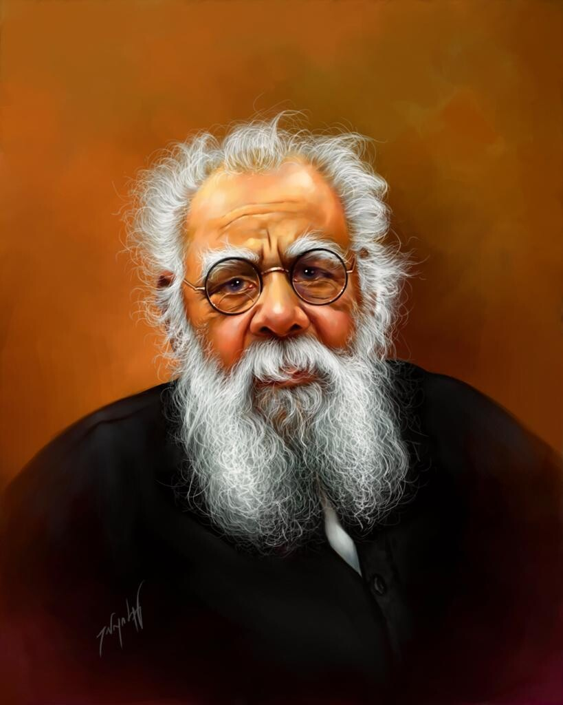

PERIYAR E.V.RAMASAMY

27 August 1944 – 24 December 1973
Preceded by: Position established
Succeeded by: Annai E. V. R. Maniammai,Head of the Justice Party,In office,1939 – 27 August 1944
Inaugural Holder: C. Natesa Mudaliar
Preceded by: Ramakrishna Ranga Rao of Bobbili
Succeeded by: P. T. Rajan,Personal details
Born: 17 September 1879,Erode, Coimbatore District, Madras Presidency, British India
Died: 24 December 1973 (aged 94),Vellore, Tamil Nadu, India
Resting place: Periyar Ninaividam
Political party: Dravidar Kazhagam (from 1944)
Other political:
affiliations: Indian National Congress (1919–1925),Justice Party (1925–1944)
Spouses: Annai E. V. R. Nagammai,(m. 1899; died 1933),Annai E. V. R. Maniammai,(m. 1948)
Occupation: Activistpoliticiansocial reformer
Biography
By religion
Baha'i FaithBuddhismChristianity Christian fundamentalismCatholic Anti-CatholicismProtestantism Anti-ProtestantismLatter Day Saint movement MormonismJehovah's WitnessesEastern OrthodoxyOriental OrthodoxySeventh-day AdventistUnification ChurchWestboro Baptist ChurchHinduismIslam IslamismTwelver Shi’ismWahhabismJainismJudaism Conservative JudaismPaganismNew religious movementPandeismScientologySikhismYazdânismZoroastrianism
By religious figure
AishaCharles Taze RussellEllen WhiteJesusMosesMuhammadPaul the ApostleSaul
By text
BibleQuranHadiths Sahih al-BukhariMormon sacred texts Book of MormonTalmud
Religious violence
BuddhismChristianity MormonismJudaismIslamPersecution By ChristiansSectarian violenceSegregationTerrorism ChristianHinduIslamicSikhJewishWar In IslamIn Judaism
Bibliographies
ChristianityIslamJudaismMormonismScientology
Related topics
AbuseApostasy In IslamIn ChristianityCriticism of atheismCriticism of monotheismSexualitySlaverySuperstitions MuslimJewish
vte
History
Periyar was born in Erode, Madras Presidency in a rich family. At a young age, he witnessed many incidents of racial, caste and gender discrimination. Periyar married when he was 19 and had a daughter who lived for only 5 months. His first wife, Nagammai, died in 1933. He always protested against young women getting married to much older people. Periyar, when he was 72, married for a second time, Maniammai who was 32 at the time in July 1948. His second wife, Maniammai, continued Periyar's social work after his death in 1973, but Dravidar Kazhagam was still spreading his thoughts and ideas. Periyar fought for the Tamil language, Tamil people, and for their rights until his death. He was against Brahmin for their caste and religious following. Periyar organized anti-Hindi protests in 1938, against introducing Hindi as a compulsory language of study in schools. Now in the present days, Periyar's followers are increasing all over the world among the Tamil people, due to their interest in Tamil language and history behind them.
Vaikom Satyagaraha
Vaikom Satyagraha was a nonviolent agitation for access to the prohibited public environs of the Vaikom Temple in the Kingdom of Travancore by the Congress Party. Kingdom of Travancore was known for its rigid and oppressive caste system and hence Swami Vivekananda called Travancore a "lunatic asylum".
In Vaikom, a small town in Kerala state, then Travancore, there were strict laws of untouchability in and around the temple area. Dalits, also known as Harijans, were not allowed into the close streets around and leading to the temple, let alone inside it. Anti-caste feelings were growing and in 1924 Vaikom was chosen as a suitable place for an organised Satyagraha. Under his guidance a movement had already begun with the aim of giving all castes the right to enter the temples. Thus, agitations and demonstrations took place.
Ramasamy was invited to led the movement as he was the President of the Madras Presidency Congress.[40][41]On 14 April, Ramasamy and his wife Nagamma arrived in Vaikom. They were immediately arrested and imprisoned for participation.Ramasamy and his followers continued to give support to the movement until it was withdrawn during which he was arrested again.
The way in which the Vaikom Satyagraha events have been recorded provides a clue to the image of the respective organisers. In an article entitle Gandhi and Ambedkar, A Study in Leadership, Eleanor Zelliot relates the 'Vaikom Satyagraha', including Gandhi's negotiations with the temple authorities in relation to the event. Furthermore, the editor of Ramasamy's Thoughts states that Brahmins purposely suppressed news about Ramasamy's participation. A leading Congress magazine, Young India, in its extensive reports on Vaikom never mentions Ramasamy
After the intervention of Mahatma Gandhi, the agitation was given up and a compromise was reached with the Regent Sethu Lakshmi Bayi, who released all those arrested and opened the north, south, and west public roads leading to Vaikom Mahadeva Temple to all castes. However, she refused to open the eastern road. The compromise was criticized by Ramasamy. Only in 1936, after the Temple Entry Proclamation, was access to the eastern road and entry into the temple allowed to the lower castes.[46] In 1925 the Madras Presidency Congress passed an unanimously resolution hailing Ramasamy as Vaikom Veerar or Hero of Vaikom in the Kanchipuram Session.
Self-Respect Movement
Ramasamy and his followers campaigned constantly to influence and pressure the government to take measures to remove social inequality,(abolish untouchability, manual scavenging system etc.) even while other nationalist forerunners focused on the struggle for political independence. The Self-Respect Movement was described from the beginning as "dedicated to the goal of giving non-Brahmins a sense of pride based on their Dravidian past".
In 1952, the Ramasamy Self-Respect Movement Institution was registered with a list of objectives of the institution from which may be quoted as
for the diffusion of useful knowledge of political education; to allow people to live a life of freedom from slavery to anything against reason and self respect; to do away with needless customs, meaningless ceremonies, and blind superstitious beliefs in society; to put an end to the present social system in which caste, religion, community and traditional occupations based on the accident of birth, have chained the mass of the people and created "superior" and "inferior" classes... and to give people equal rights; to completely eradicate untouchability and to establish a united society based on brother/sisterhood; to give equal rights to women; to prevent child marriages and marriages based on law favourable to one sect, to conduct and encourage love marriages, widow marriages, inter caste and inter-religious marriages and to have the marriages registered under the Civil Law; and to establish and maintain homes for orphans and widows and to run educational institutions.
Propagation of the philosophy of self respect became the full-time activity of Ramasamy since 1925. A Tamil weekly Kudi Arasu started in 1925, while the English journal Revolt started in 1928 carried on the propaganda among the English educated people.The Self-Respect Movement began to grow fast and received the sympathy of the heads of the Justice Party from the beginning. In May 1929, a conference of Self-Respect Volunteers was held at Pattukkotai under the presidency of S. Guruswami. K.V. Alagiriswami took charge as the head of the volunteer band. Conferences followed in succession throughout the Tamil districts of the former Madras Presidency. A training school in Self-Respect was opened at Erode, the home town of Ramasamy. The object was not just to introduce social reform but to bring about a social revolution to foster a new spirit and build a new society.
Women's rights
As a rationalist and ardent social reformer, Ramasamy advocated forcefully throughout his life that women should be given their legitimate position in society as the equals of men and that they should be given good education and have the right to property. He thought age and social customs was not a bar in marrying women. He was keen that women should realise their rights and be worthy citizens of their country.
Ramasamy fought against the orthodox traditions of marriage as suppression of women in Tamil Nadu and throughout the Indian sub-continent. Though arranged marriages were meant to enable a couple to live together throughout life, it was manipulated to enslave women. Much worse was the practice of child marriages practised throughout India at the time. It was believed that it would be a sin to marry after puberty.Another practice, which is prevalent today, is the dowry system where the bride's family is supposed to give the husband a huge payment for the bride. The purpose of this was to assist the newly wedded couple financially, but in many instances dowries were misused by bridegrooms. The outcome of this abuse turned to the exploitation of the bride's parents wealth, and in certain circumstances, lead to dowry deaths. There have been hundreds of thousands of cases where wives have been murdered, mutilated, and burned alive because the father of the bride was unable to make the dowry payment to the husband. Ramasamy fiercely stood up against this abuse meted out against women.
Women in India also did not have rights to their families' or husbands' property. Ramasamy fought fiercely for this and also advocated for women to have the right to separate or divorce their husbands under reasonable circumstances.[72] While birth control remained taboo in society of Ramasamy's time, he advocated for it not only for the health of women and population control, but for the liberation of women.
He criticised the hypocrisy of chastity for women and argued that it should either apply also to men, or not at all for both genders.While fighting against this, Ramasamy advocated getting rid of the Devadasi system. In his view it was an example of a list of degradations of women, attaching them to temples for the entertainment of others, and as temple prostitutes.Further, for the liberation of women, Ramasamy pushed for their right to have an education and to join the armed services and the police force.
According to biographer M.D. Gopalakrishnan, Ramasamy and his movement achieved a better status for women in Tamil society. Ramasamy held that, in matters of education and employment, there should be no difference between men and women. Gopalakrishnan states that Ramasamy's influence in the State departments and even the Center made it possible for women to join police departments and the army. Ramasamy also spoke out against child